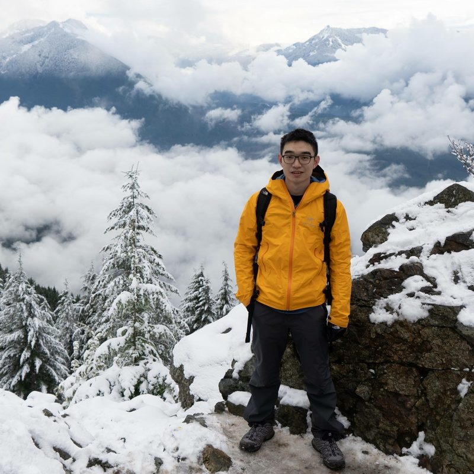

Jian Wang
Hi! I'm a Senior Machine Learning Engineer at DoorDash, specializing in agentic AI, retrieval systems, and production GenAI at scale.
Achievements
- Leveraged LLMs at DoorDash to compress a 2-year project into 6 months with better business outcomes (2024).
- Led a 13-person, 276km (171 miles) bike expedition north of Beijing in 2 days, under $20/person all-in (2015).
- Won Gold Medal at Chinese Physics Olympiad, one of only 51 awarded nationwide among thousands of competitors (2011).
Interests
- Reading non-fiction books, especially biographies.
- Listening to classical music, especially Bach, Chopin, and Mahler.
- Gym workouts and hiking.